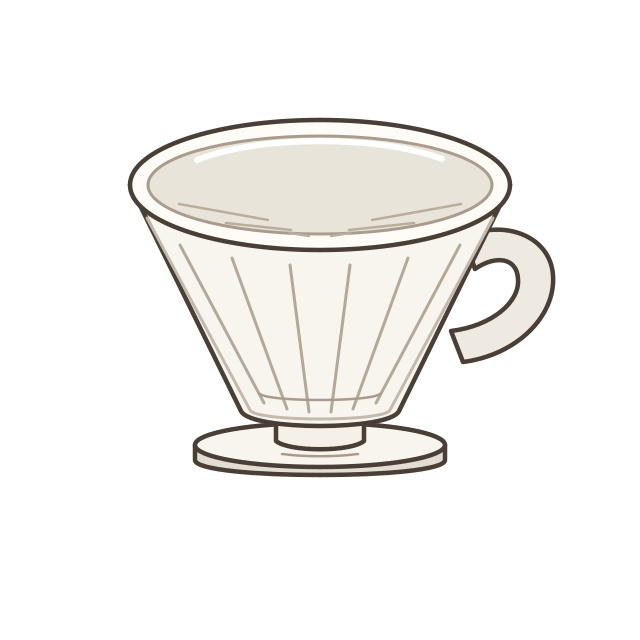

先让每一粒粉，
都遇见水。
少量热水打湿咖啡粉，粉层里会冒出小气泡。这就是常说的“闷蒸”：让干粉均匀湿润，也给气体一点排出的时间。
看什么？有没有没被打湿的浅色干粉。
THE LITTLE SCIENCE OF A GOOD CUP
手冲，是你和一杯咖啡的合作。
让水流慢一点，让好奇心多一点。
从看懂一个动作，到冲出自己的味道。
你不需要先成为咖啡师。
先知道，每个动作在改变什么。
01 / SEE WHAT HAPPENS
热水不是简单地把咖啡“冲下去”。
它先打湿粉层，再带走可溶物，最后与粉渣分开。
向下滚动，看水走过粉层。
这里是过程示意，真实冲煮中三个过程会交叠发生。
少量热水打湿咖啡粉，粉层里会冒出小气泡。这就是常说的“闷蒸”：让干粉均匀湿润，也给气体一点排出的时间。
看什么？有没有没被打湿的浅色干粉。
咖啡中的可溶物进入水里，形成香气、滋味与浓度。研磨、水温和接触时间，会一起影响这段过程。
先记住：“浓不浓”和“萃取得够不够”，是两个问题。
重力让液体穿过粉层和滤纸。观察下水速度，比死记一个时间更有用：一直积水或很快流空，都值得记录。
尝试什么？同一支豆子，下次只改变一个变量。
02 / MEET YOUR BREWER
两套器具，两种准备方式。
选一只，下面的第一杯配方也会跟着切换。

滤杯 + 分享壶，彼此分开。练习稳定细水流，壶嘴靠近粉层，先求好控制。
用克记录豆量与用水量，让好喝的一杯能够复现。
冲前再磨。没有磨豆机，也能从少量手冲代磨粉开始。
记录从第一次注水开始的时间，给下一杯留下线索。
03 / FIND YOUR KIND OF COFFEE
先看包装上的烘焙度，再看风味描述。
“柑橘、坚果、巧克力”是品尝联想，不代表加了这些食物。
试试带有坚果、焦糖或巧克力描述的中烘焙。它可以是第一杯的起点，再慢慢探索自己的偏好。
烘焙名称没有跨品牌的统一刻度。也看看烘焙日期、冲煮建议，先买小份尝试。
04 / A LITTLE CHANGE, A DIFFERENT CUP
把术语变成看得见的变化。
一次只改一个变量，你会更清楚发生了什么。
看右侧颗粒与水流的变化。磨豆机刻度并不通用，实际下水速度比数字更值得观察。
水温是一个调整方向。手里的热水、粉层温度与屏幕设定值并不完全相同。
1:15 是每 1g 咖啡配 15g 冲煮用水。它描述配方的用水量，不是最后杯中的咖啡量。
这是变量关系示意，水量按比例计算；颗粒、水流和温度动画不预测真实萃取率或风味。
05 / YOUR FIRST RECIPE
一份能照着做的起点。先把动作做顺，
再根据口感调整，不用一次追求完美。
准备器具
看一看
06 / TASTE. NOTICE. TRY AGAIN.
稍放凉，再尝一口。喜欢的保留，
不喜欢的，下次只改一件事。
不一定。像水果一样明亮、清爽的酸感可能正是这支豆子的特点。先分辨你不喜欢的是“酸”本身，还是尖锐、空薄、不协调的感觉，再比较研磨或水温。
时间是记录项，不是唯一目标。器具、滤纸、粉量与颗粒分布都会影响下水。先记下这次的时间和味道，再用同一支豆子做比较。
部分水留在粉层和滤纸中，也可能有少量蒸发。配方的“注水量”和“最后饮品量”是不同的数据；润纸用水还要另外倒掉。
先确认有匹配的滤杯和滤纸、能稳定倒水的壶与承接咖啡的容器。秤能帮助复现配方；暂时没有磨豆机，可以买少量适合手冲的代磨粉。先把已有器具用顺。
NOW, MAKE IT YOURS.
拿起器具，把刚才看到的变化，变成自己的动作。
冲好后，记下这一杯 →